Session 2, 2026-10-08. Branch experiment/fable-layout-01a, PR #31 (draft, never merge), head 206607d, board md5 de2e14fb…. Generated by tools/review_views.py from out/m4/layers and the mote's layer renders; the numbers are from out/m4/ and out/m5/drc_exclusions.md.
Where it stands
Check (BRIEF 1.a §5 / §7 M2)
293dc11 (session 1)
206607d (now)
Open links besides J1's no-connect pair
3 (~{ADIN_INT}, VBUS at U11, the 5V_PI pours)
0
DRC errors of new copper (Sofar's copied features excluded with reasons)
16, incl. both pairs shorted P–N at the T pads
0 (111 errors, all Sofar's, each with a reason)
Copper-defect warnings (dangling tracks / vias)
1
0
New segments below their class width / 0.15 mm links beyond a pad field / class-clearance items
0 / 0 / 6
0 / 0 / 0
ADIN pairs, mm (limits 9.5 / 9.5 / 21.3 / 21.3)
10.7 / 8.59 / 18.24 / 18.88, shorted
9.46 / 8.80 / 17.98 / 18.62, P–N 0.15 mm checked on the board
Kelvin sense links by track only
yes / yes
yes / yes
Copied blocks vs the mote (blockcheck)
0 missing, 135 trimmed, 1 pad-to-pad path cut
0 missing, 127 trimmed, 0 cut
Fixed items, keep-outs, envelopes (check_fixed)
0 failures
0 failures
Still open, by design or declared: one bottom GND pour island with no via (no pad on it); the DRC exclusions are a reviewed table, not stored keys (Q7); M3 (the JLCPCB DFM sweep) has not started; 254 DRC warnings are silk / text / padstack from the imported footprints, for M3.
Colours: data pairs bus VBUS 3V3 rails 5 V to the Pi signals / GND tracks GND fills. Left: Sofar's mote, its copper placed as this board places the block. Right: this board. Same renderer, same region, same scale (grid 0.1 mm cells; the images are 40 px/mm).
port1 pair x -3.5…9.0, y 25.0…32.0 mm · block ADIN
Port-1 data pair: U1 pins 27/28 (north edge of U1) to T1 pads 1/2; the mote's U1 and T1 sit elsewhere, so the mote view shows only the ADIN block's copper placed as here
Fixed / as built: QE round 1 F1: BM1_DATA_P no longer crosses T1 pad 2. The pair leaves U1 pins 27/28 by two vias straight out of the pins (1.0 / 1.48 mm, staggered because two 0.45 mm vias do not fit side by side at the 0.5 mm pin pitch), runs on Internal 1, swaps P and N once (the pin and pad order demand it) and comes back to Top, then enters T1 pads 1/2 along a straight lane, spreading from the 0.4 mm track pitch to the pads' 0.65 mm pitch before the pad edge. Lengths 9.46 / 8.80 mm (mote 9.5).
Versus the mote: Sofar also leaves the pins by vias 0.75 / 1.1 mm out and runs the port on Internal 1, but routes P and N as two separate tracks and enters T1's pads from the transformer body side with a via 0.9 mm behind each pad. Here the pads face U1, so the pair enters from the open side.
Still open: P is 0.04 mm under the mote's length: no slack left. The crystal Y1's bottom pad under the approach forbids a via pair at T1, which is why the port's layer change sits at the pins.
port2 pair x -4.0…14.0, y 33.0…40.0 mm · block ADIN
Port-2 data pair: U1 pins 4/5 (south edge) through the pocket's south exit to T2 pads 1/2
Fixed / as built: QE round 1 F1: BM2_DATA_N no longer crosses T2 pad 1. The pair leaves U1 pins 4/5 on Top, runs south then east through the pocket's exit along y 38, north-east across the band, swaps once, and gets its via pair beside T2's approach (0.65 mm apart, as the pads). Lengths 17.98 / 18.62 mm (mote 21.3; 01 had 21.3 / 23.4).
Versus the mote: Sofar's port 2 is 21 mm of Internal 1 with vias at both ends; the mote's T2 sits on the far side of the processor. Here T2 is 11 mm from U1 and the pair is 3 mm shorter.
Still open: The pocket's exit (U2's fan-out vias, the port-2 pair, the Internal 2 corridors for 3V3 / 1V8 / ADIN_PWR / ~{CS}) is the tightest place on the board: 0.15 mm P-N, 0.175 mm to the nearest other net.
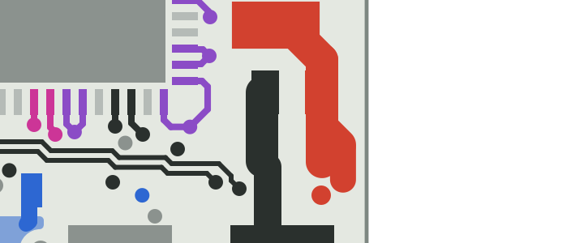
Sofar's mote, Top (block ADIN transform)
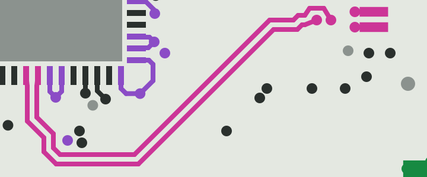
This board, Top
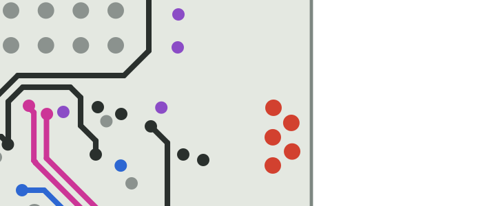
Sofar's mote, Internal 1 (block ADIN transform)
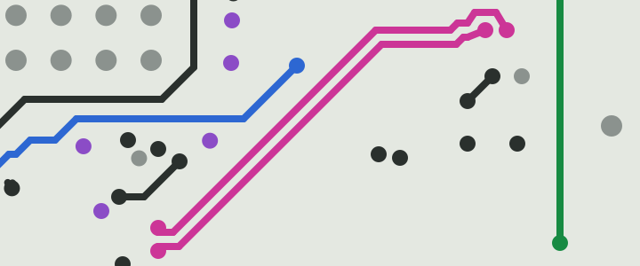
This board, Internal 1
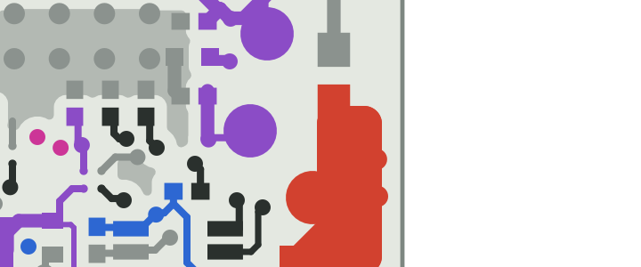
Sofar's mote, Bottom (block ADIN transform)
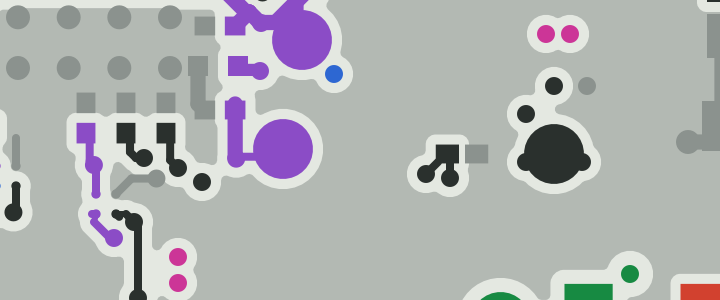
This board, Bottom
int fanout x -7.5…-3.0, y 28.0…33.0 mm · block ADIN
~{ADIN_INT} fan-out at the board's west edge: U1.39 → via → R1.1 (QE round 1 F2)
Fixed / as built: QE round 1 F2: Sofar's ~{ADIN_INT} fan-out is whole again. The mote's via lands 0.08 mm inside the board edge (inside the 0.5 mm edge clearance); a hand via 0.44 mm further in joins both of Sofar's clipped lead-outs (edge 0.525 mm, 0.207 mm from other-net copper, proven by the copy script). U1.39 -> Top -> via -> Bottom -> R1.1, as the mote.
Versus the mote: Identical copper but for the via's position (the mote view shows Sofar's via cut by our edge).
Still open: None. Every copied item that carries a pad-to-pad connection on the mote is now protected from the dangling trim (0 of them cut on this board).
Sofar's mote, Top (block ADIN transform)
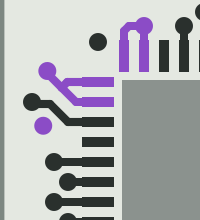
This board, Top
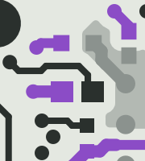
Sofar's mote, Bottom (block ADIN transform)
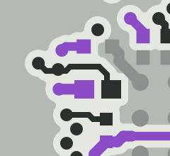
This board, Bottom
u2 u3 pocket exit x -7.0…5.0, y 35.0…40.0 mm · block ADIN
The pocket's south exit: U2 / U3 (1.8 V and 3.3 V switches, bottom) with their fan-out vias, the port-2 pair above, 3V3 / 1V8 / ADIN_PWR leaving east
Fixed / as built: The three open links of 293dc11 are closed: 1V8 and ADIN_PWR reach U2's balls, VBUS reaches U11 (not in this view). U2 / U3's power balls get their vias before anything else is routed (fan-out first), on the ball's own layer, in the exit's south-west corner so the pair's lane stays free.
Versus the mote: Sofar has U2 / U3 beside the processor with room on three sides; here they sit in a 1.5 mm gap between U1 and the insert MP1's keep-out, which the pair and four corridors also cross.
Still open: U2's ADIN_PWR ball found no fan-out spot in the corner and is routed afterwards (it is connected; the reservation failed). This exit is where any further change will bite.
Fixed / as built: T1 stays at its M1 position (6.7, 28.4); the bus legs to L1 pads 6/7 at 0.2 mm keep 0.35 mm from everything.
Versus the mote: The T1 cluster is a rigid copy (pads, Sofar's tracks and vias to 0.001 mm); only the data-pad approach is new.
Still open: Sofar's pads 6/7 are 0.24 mm apart (the bus class asks 0.35): 4 DRC items per transformer, in the exclusion table as on the mote.
Sofar's mote, Top (block P1T transform)This board, Top
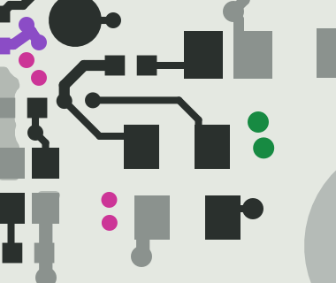
Sofar's mote, Bottom (block P1T transform)
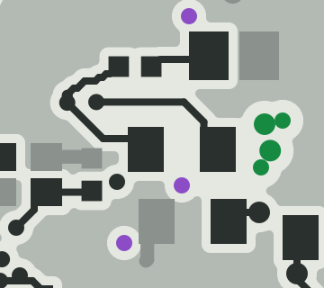
This board, Bottom
t2 cluster x 9.0…18.0, y 29.0…36.5 mm · block P2T
T2 cluster (P2T block): the region clip at mote x 138.6 dropped the GND via that sat in front of the data pads
Fixed / as built: The P2T copy region now ends at mote x 138.6: Sofar's GND pour-stitching via at mote (138.751, 116.854) belongs to the U5 cell's R23 on the mote and, after the 180 degree rotation, landed 0.4 mm in front of T2's data pads, where no pair could enter.
Versus the mote: Everything else in the cluster is the mote's copper; the dropped via's job (stitching the bottom GND pour) is done by this board's own stitching vias.
u11 payload x 27.0…38.5, y 49.0…59.0 mm · no mote counterpart
Load switch U11 at the strip's south end: VBUS in (pre-stitched via), VBUS_OUT to J5 (0.6 mm), its signals to J1
Fixed / as built: VBUS at U11 pin 1 was open in 293dc11: the ball is now pre-stitched to the VBUS plane before U11's own signals take the row. VBUS_OUT (0.6 mm) to J5 and its 6 class-clearance items are gone (0 items).
Versus the mote: No mote counterpart (the load switch is new on this board).
Still open: None at M2; the DFM sweep (M3) has not looked at it yet.
no mote counterpart on Top
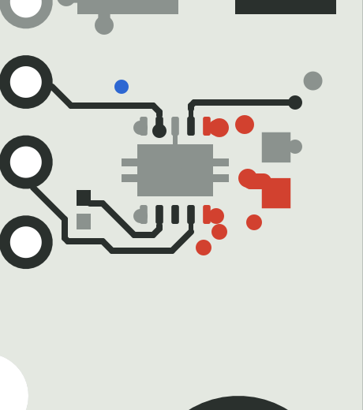
This board, Top
no mote counterpart on Internal 2 (In3)
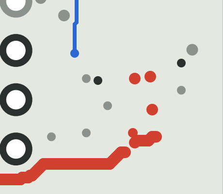
This board, Internal 2 (In3)
no mote counterpart on Bottom
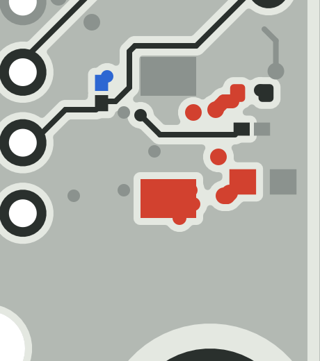
This board, Bottom
pi5v strip north x 28.5…38.5, y 6.0…25.0 mm · block B5V
5 V cell under JP1 at the strip's north end: the bottom 5V_PI pour under the output caps and the divider tap
Fixed / as built: The two 5V_PI pours were open in 293dc11 and a zone via dangled. The bottom pour reaches under the whole 5 V cell again and a 5V_PI patch on Internal 2 covers the same rectangle (as the mote carries the buck's output on a plane island); every bottom island cut by the dividers R37-R40 gets a via into the patch, and zone vias are only placed where the net has copper on another layer.
Versus the mote: Sofar's 3V3 output sits on an In4 plane island with the same divider tap; here the same cell is copied twice (3.3 V and 5 V) and the 5 V copy gets the In3 patch because In4 is the VBUS / 3V3 plane.
Still open: A bottom GND pour island under C58 / TP38 holds no via (none fits); it carries no pad and KiCad's island removal should drop it. To confirm in KiCad.
Sofar's mote, Top (block B5V transform)
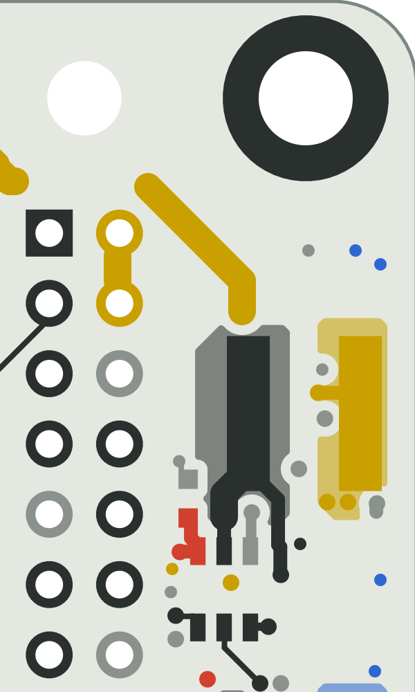
This board, Top
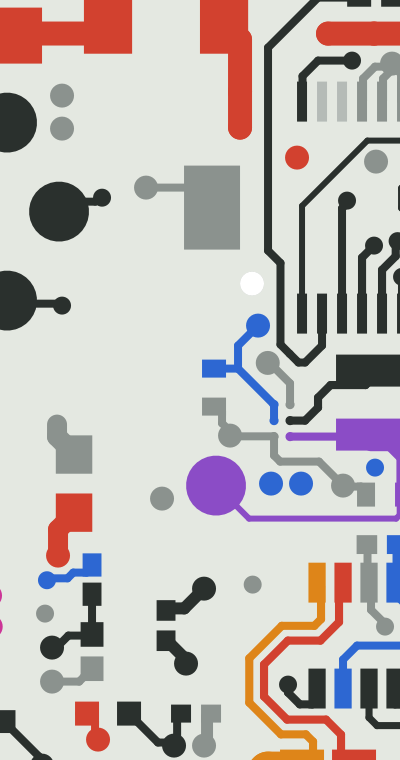
Sofar's mote, Bottom (block B5V transform)
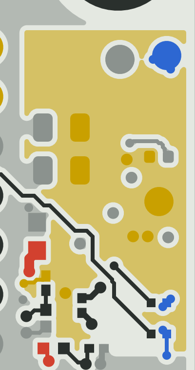
This board, Bottom
insert mp1 x -7.5…12.0, y 38.0…56.0 mm · block P1L
Port-1 inductor L1 with the insert rings MP1 / MP2 and the bus feeds; the P1L block's copper
Fixed / as built: Unchanged from session 1: the insert rings, Sofar's 7 vias per ring, the 1.5 mm bus feeds to L1, the P1L block.
Versus the mote: Rigid copy of the inductor block; the feeds and the data legs are new (the mote's inserts are elsewhere).
Still open: Sofar's 2.0 mm BM1_N stub at L1 pad 2 is 0.31 mm from Sofar's GND via (the bus rule asks 0.35): 1 DRC item, declared. The insert contact's 76 DRC items are the mote's (Sofar Q6).